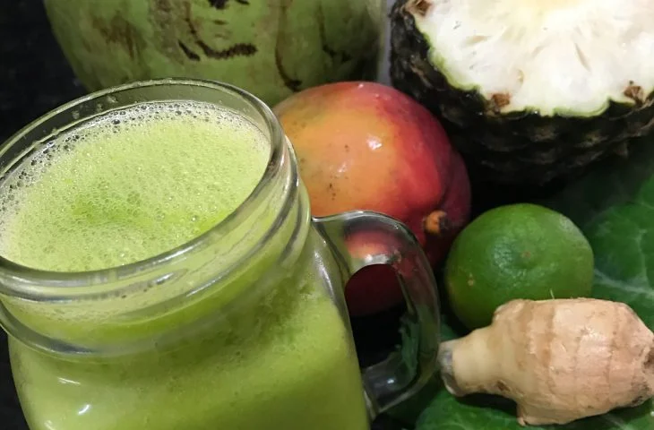

10 receitas de sucos detox para uma alimentação saudável
Os sucos detox refrescam, nutrem e são ideais para incluir no café da manhã ou lanche da tarde.
Experimente combinações incríveis com frutas, legumes, vegetais ou outros alimentos de sua
preferência. Abaixo, confira as melhores receitas de sucos detox para testar em casa!
Suco detox de couve com abacaxi
Para iniciar a lista com muito sabor e saúde, o suco detox de couve com abacaxi é a opção ideal.
Feito com couve, gengibre, abacaxi, chia e limão, esse suco detox funciona como diurético e
também elimina toxinas do corpo.
Suco detox de beterraba
Para quem adora beterraba, saiba que esse ingrediente também rende um belo detox.
O melhor de tudo é que essa receita é produzida com poucos ingredientes, apenas
Suco detox tropical

Em dias mais quentes, faça essa receitinha de suco detox tropical que promete refrescar
e dar muita saúde. Você precisa de manga, abacaxi, limão, cúrcuma, gengibre, couve e
água de coco. Não se esqueça de caprichar no gelo.
Suco verde digestivo
Se o tradicional já funciona como detox, imagina o suco verde digestivo.
Aqui, a dica é utilizar abacaxi, limão, hortelã, couve e água de coco.
Apenas ingredientes que favorecem a digestão.
Suco de maçã com gemgibre
Se você adorou a vibe de aproveitar os ingredientes que já estão na sua geladeira,
ingredientes citados, você só vai precisar de água para diluir a bebida.
Suco de limão com gengibre e hortelã
Ao invés de tomar o famoso shot de limão pela manhã, substitua por suco de
começar o dia com muita energia, saúde e nutrição.
Suco detox de melancia
O suco detox de melancia é perfeito para quem adora uma bebida mais doce.
Além da fruta, você pode colocar hortelã, gengibre, limão e semente de
linhaça. Tudo isso para deixar seu suco docinho e bem refrescante.
Suco verde com ora-pro-nóbis
Tem mudinha de ora-pro-nóbis aí no seu quintal? Então aproveite essa planta
perfeita para auxiliar na digestão e saúde do intestino.
Suco de manga com cenoura
Fala sério, é impossível resistir a cor dessa bebida, não é mesmo? Além desse visual
atrativo, o suco de manga com cenoura é perfeita para manter a saúde do intestino e
evita a prisão do ventre. Certamente, uma ótima opção de suco detox.
Suco de couve com cenoura
O suco de couve com cenoura também é outra opção bem digestiva. Além desses ingredientes,
Adicione maçã, limão, água de coco, hortelã e gengibre para deixar a bebida mais cítrica
e docinha.